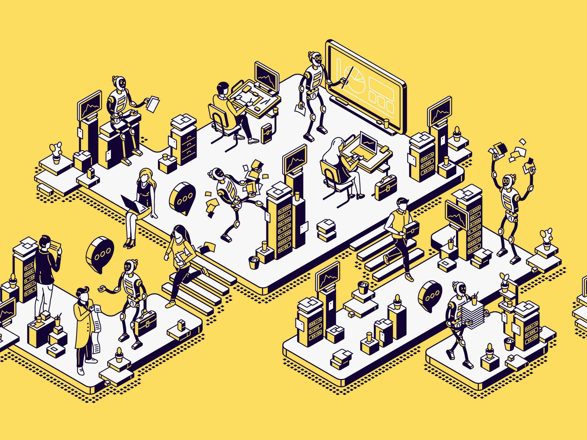

HCDD 340
Human-Centered Design for Mobile Computing
Saeed Abdullah (saeed@psu.edu)
Introduction
Associate Professor in IST
Research
- Digital Health
- Human Computer Interaction (HCI)
- Human-centered AI
Wellbeing & Health Innovation (WHI) lab
Teaching Assistant
Course Logistics
- Yash Mahajan
- Monday and Wednesday: 12:00 - 1:30pm
- Saeed Abdullah
- Friday 2:00 – 3:00pm
We will use Zoom for office hours
Reserve your slots here
All slots are booked for a given day? ü§Ø
- Please send us an email and we will try to schedule a meeting with you.
Human-Centered Design (HCD) for Mobile Computing
- What is mobile computing?
- Sub-domain in human-computer interaction (HCI)
- Key attribute: “Information at your fingertips”
- Portable, Connected, Interactive, and Personal devices
- Phones, wearables, …
- Portable, Connected, Interactive, and Personal devices
This course will focus on progressive web apps (PWA)
What is a progressive web app?
Built using web platform technologies
User experience like a platform-specific app
- Windows, macOS, Android apps
Why PWAs?
Best of both worlds? (Web and app specific platforms)
- Web platform is widely available
- Accessible development and distribution
- Increasingly better integration with platform
Why PWAs?
Why PWAs?
Learning Objectives
Become familiar with processes and tools for PWA design and development
Understand HCD design requirements and guidelines
Translate design ideas into functional prototypes
Learn to use generative AI tools for design and development
Learning Objectives
Become familiar with processes and tools for PWA design and development
Understand HCD design requirements and guidelines
Translate design ideas into functional prototypes
Learn to use generative AI tools for design and development
AI Upskilling: A Key Objective
A transformative shift in workforce

AI Upskilling: : A Key Objective
- Preparation for a transformative shift in workforce
- Critical assessment of strength and limitations of AI
AI Upskilling: : A Key Objective
- You are
allowed(encouraged) to use AI for all class deliverables- assignments, final project
- We will have class activities focusing on GenAI use for design and implementation
Learning Objectives
Become familiar with processes and tools for PWA design and development
Understand HCD design requirements and guidelines
Translate design ideas into functional prototypes
Learn to use generative AI tools for design and development
My hope: this class will help you get a job
- Enhancing your CV
- Concrete development and design skills
- GenAI skills
- A portfolio for potential employer
- Final project
Resources
- Slides will point to relevant resources. E.g.,:
Resources: LLM
- You will need access to an LLM (whatever is free/cheap for you)
- ChatGPT, Gemma, Claude
Resources: Development
- Editing html, css, and javascript files
- VS Code is a good option
Course Structure
Grading
- A: 100–93%
- A-: 92–90%
- B+: 89–87%
- B: 86-83%
- B-: 82–80%
- C+: 79–77%
- C: 76–70%
- D: 69–60%
- F: <60%
Cutoff point for each grade is the lower number without rounding (e.g., 89.9% will result in B+)
Grading
- Assignment — 48%
- Final Project — 45%
- Attendance and Class Participation — 7%
Assignments — 48%
- Assignment 1: 16 points
- Assignment 2: 16 points
- Assignment 3: 16 points
Grading
- Assignment — 48%
- Final Project — 45%
- Attendance and Class Participation — 7%
Final Project — 45%
- Will be done in ~3 person groups
- See your group in Canvas -> People -> Group
- Excellent opportunity for learning by doing
Final project topic
- Considerable flexibility in terms of topic
- develop a chatbot interface?
- redesign an existing app (e.g., Penn State Go app, Apple Music)?
Final project topic
- Focus on your portfolio
- Showcasing it in your job/internship applications?
- Maybe prototype for broader reach?
Final project topic: Start thinking about it!
We are happy to discuss options!
Final project — 2 presentations & 3 submissions
- Proposal submission: 5 points
- Proposal Presentation: 8 points
- Final presentation: 10 point
- Code and documentation: 20 point
- Mandatory group review: 2 points
Mandatory group review
- Due at the end of the class
- Report evaluating performance of each group member (including yourself)
- Will also be used to adjust project grades
- Be fair, courteous, and respectful to your group member
Final project: Details in the syllabus
Grading
- Assignment — 48%
- Final Project — 45%
- Attendance and Class Participation — 7%
Attendance is critical
- Key approach: Learning by doing
- Classes will involve activities
- Helping to understand concept
- Very relevant for assignments and final project
Attendance and Class Participation — 7%
- We will take attendance on random days
- Each missed class will lead to 1% grade deduction
Need to skip a class? Let me know beforehand
- We will allow skipping classes for
- “University-sanctioned activity”
- Health reasons ü§ß
- You must communicate to us before the class
Late submissions: Points deduction
- 25% up to 12 hours
- 50% up to 24 hours
- 100% after 48 hours
Grade Disputes
- You must get in touch within one week
- No point change at the end of the semester
Academic Integrity
- You are responsible to read and follow the Code
of Conduct
- When in doubt, talk to us
- I am required to report any academic integrity violation in the class
For this course: Code is similar to writing
- Similar academic integrity rules apply in this course
- Assignments must consist of your individual efforts
- No copying code from other students
- It is ok to help others, but do not share code directly
- A good rule of thumb: close your laptop as you help others
Is this a violation?
Sahiti and Hee Jeong are working on the first assignment. Hee Jeong is having difficulty with using appropriate layout parameters.
Sahiti suggested that Hee Jeong should look at a specific slide from the class (“slide 19 from Monday”)
Is this a violation? No
Sahiti and Hee Jeong are working on the first assignment. Hee Jeong is having difficulty with using appropriate layout parameters.
Sahiti suggested that Hee Jeong should look at a specific slide from the class (“slide 19 from Monday”)
- No violation here
Is this a violation?
Sahiti and Hee Jeong are working on the first assignment. Hee Jeong is having difficulty with using appropriate layout parameters.
Sahiti looked at her own code and suggested: “use a border margin of 20 pixels.” And, Hee Jeong updated it accordingly.
Is this a violation? Yes
Sahiti and Hee Jeong are working on the first assignment. Hee Jeong is having difficulty with using appropriate layout parameters.
Sahiti looked at her own code and suggested: “use a border margin of 20 pixels”. And, Hee Jeong updated it accordingly.
Who would be responsible for violation here?
Both violated academic integrity
Is this a violation?
Hee Jeong has completed the second assignment. But, Sahiti’s code is not working as expected and she asked for help.
Hee Jeong looked at her code and helped her to debug: “add a log statement here and let’s see what is the value of the variable”
Is this a violation? No
Hee Jeong has completed the second assignment. But, Sahiti’s code is not working as expected and she asked for help.
Hee Jeong looked at her code and helped her to debug: “add a log statement here and let’s see what is the value of the variable”
No violation here (no code sharing)
Is this a violation?
Hee Jeong has completed the second assignment. But, Sahiti’s code is not working as expected and she asked for help.
Hee Jeong looked at her code and read the corresponding lines to Sahiti: “this is how I did it”
Is this a violation? Yes
Hee Jeong has completed the second assignment. But, Sahiti’s code is not working as expected and she asked for help.
Hee Jeong looked at her code and read the corresponding lines to Sahiti: “this is how I did it”
Both violated academic integrity
What’s the recommended sanction for copying code?
Hee Jeong knows that Sahiti took the same class semester. She asked Sahiti to take a look at her submitted final project from last year. Hee Jeong then used Sahiti’s code for her own final project.
Given the IST guideline, what sanction would you recommend?
Academic Integrity: Please be mindful
- I am required to report any academic integrity violation in the class
Disability Accommodation: Please let me know
Counseling and psychological services
- Your overall wellbeing is important
- Counseling and Psychological Services at University Park
- Don’t hesitate to get in touch if I can help
Fixed seating arrangement for groups

Fixed seating arrangement for groups: Why?
- Leads to better group communications
- Fostering supportive and constructive interactions as members do class activities together
Fixed seating arrangement for groups
Check out NotebookLM
Course syllabus in NotebookLM
- You can create your own using the markdown source
Can you get it to make an error in answering questions?
What do you think about the podcast format?
Todo
- Install Visual Studio Code
- Install Live
Preview extension from Microsoft
- Settings -> Extensions
- Search for “Live Preview”
HCDD 340: Goals
Learn about exciting things. Get your CV & portfolio shining. Have fun!